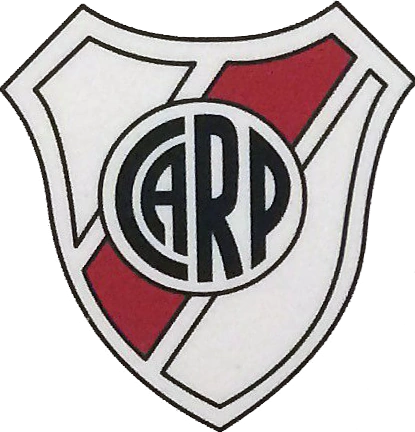
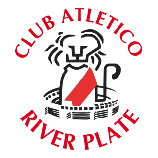
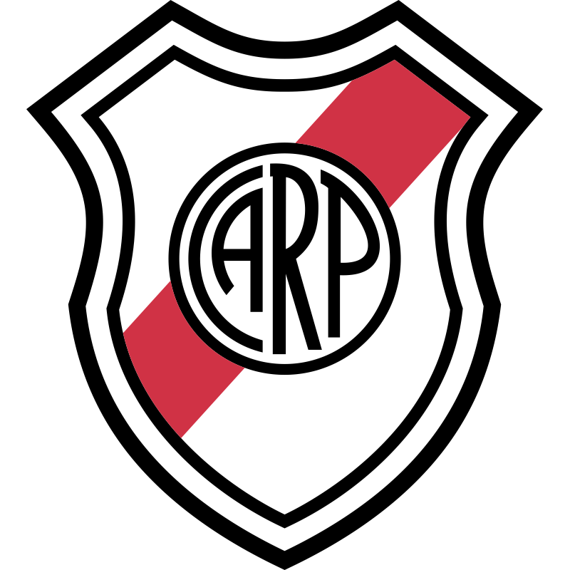
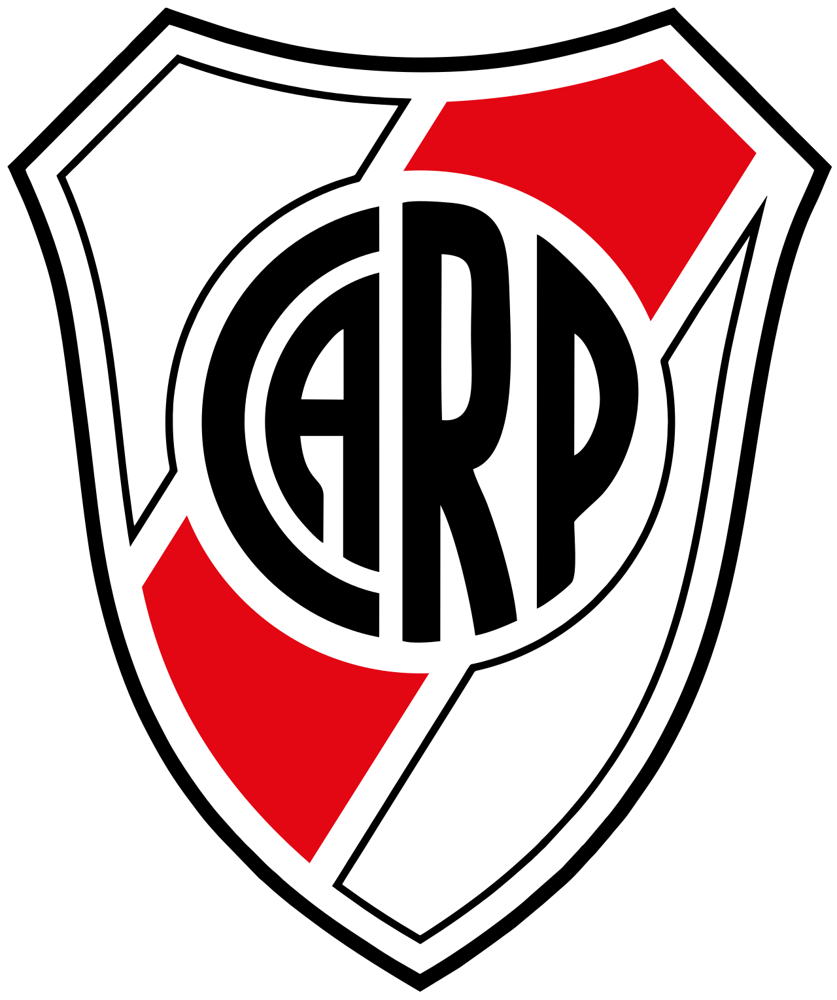

| HISTORIA DE LOS ESCUDOS DE RIVER | |||||
| 1970 | 1985 | 1994 | 1997 | 2006 | 2022 |
|  |
 |
 |
 |
 |
 |
| Escudo clasico con banda roja y siglas ARP. | Diseño circular con nombre completo del club. | Vuelve el escudo tradicional mas estilizado. | Version moderna con fondo negro destacado. | Ajuste de lineas y colores mas definidos. | Diseño limpio, minimalista y actual. |